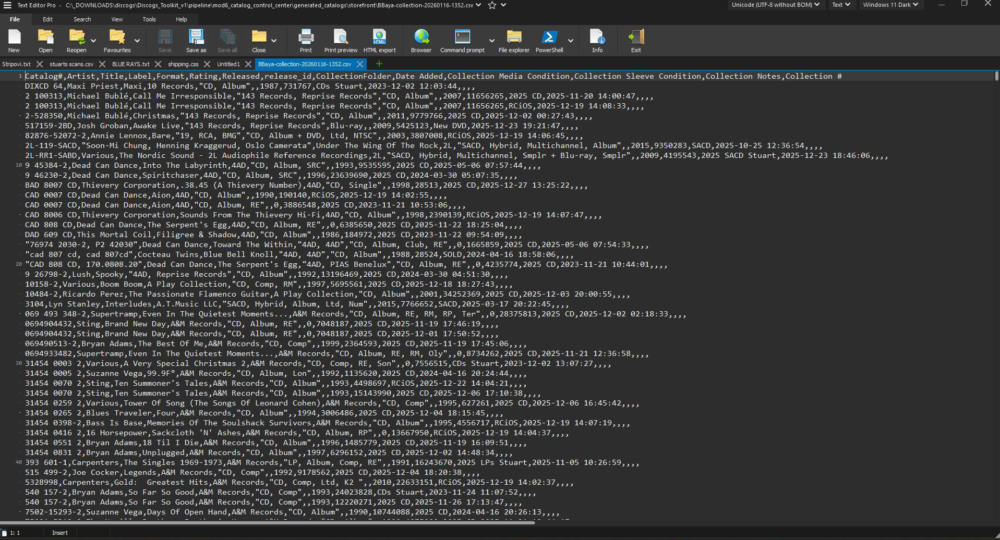
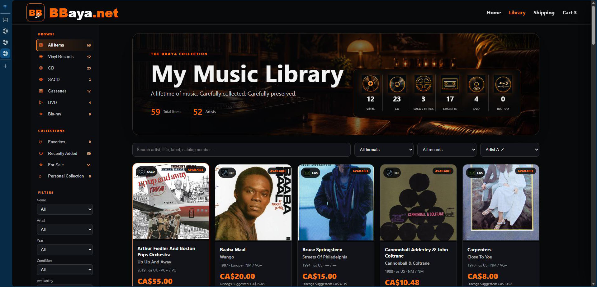

From raw export to finished storefront
From this.
To that.
Start with the actual Discogs CSV export. Pass it through one connected Toolkit. Finish with a searchable, responsive storefront ready for buyers.

DISCOGS
TOOLKITIMPORT · ORGANIZE · PUBLISH→
TOOLKITIMPORT · ORGANIZE · PUBLISH→

The clearest proof of the Toolkit
From this to that — in a few controlled clicks.
The screenshots below are the real starting point and the real generated result.
FROM THISDownloaded Discogs CSV
DISCOGS TOOLKITIMPORT · RECONCILE · ENRICH · ORGANIZE · PUBLISH→
TO THISResponsive BBaya Storefront
Starting point
- Downloaded Discogs CSV
- Plain comma-separated rows
- Raw collection fields
- No customer-facing presentation
- No storefront navigation
- No reusable publishing layout
→
Finished selling workspace
- Organized master collection
- Enriched release information
- Inventory and sales control
- Marketplace-ready packages
- Consistent pricing and descriptions
- Professional personal storefront
ImportCSV and Excel
ReconcileCompare and protect
EnrichMetadata and covers
ManageInventory and sales
PrepareMarketplace packages
PublishStorefront and catalogs